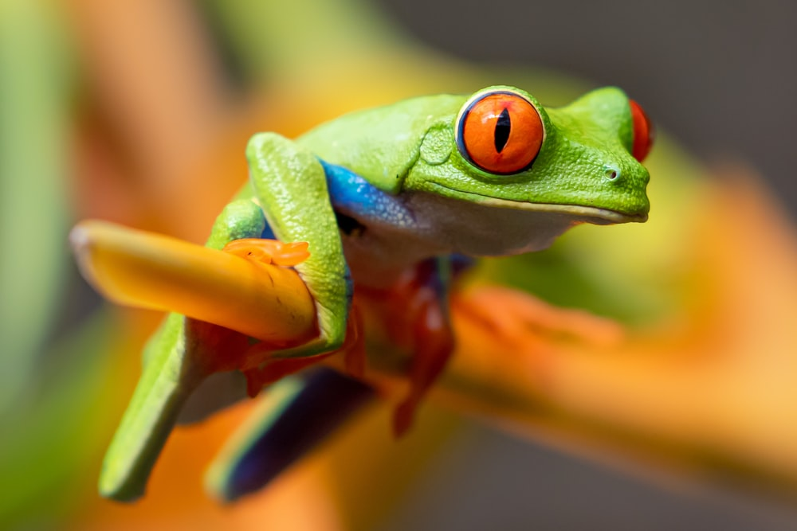
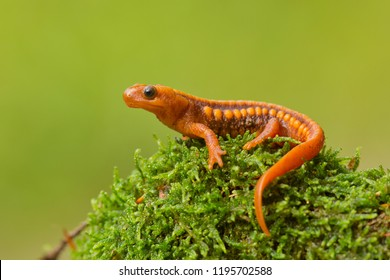
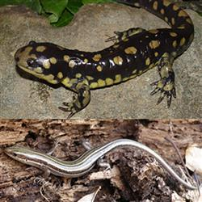
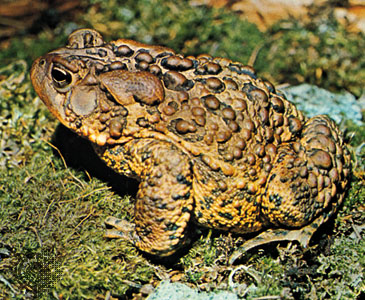

All About Amphibians
All amphibians are vertebrates, and they need moist environments or water to survive. They are cold-blooded. They absorb water and breathe through their thin skin. They have at least one special skin gland used for defense. Most follow the life cycle of egg-larva-adul
You can find examples of amphibians all around the world. In some cases, examples of amphibians seem like the same animals, but they can be quite different like a frog and a toad.
frog
newts
salamanders
toads
